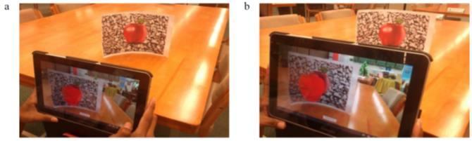
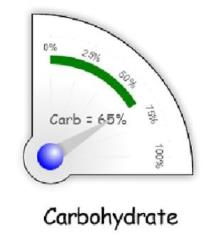
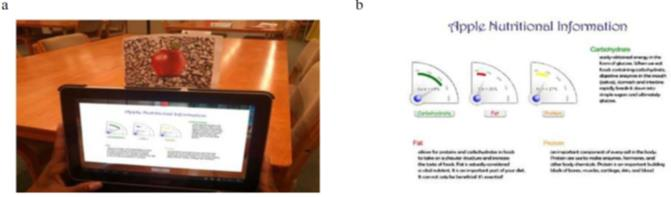
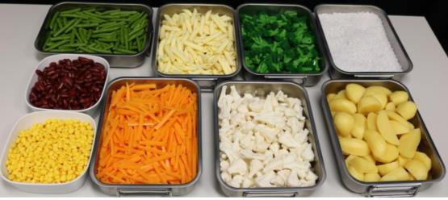
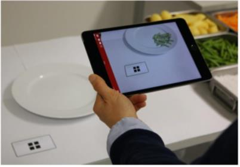

Data publicării: 24.11.2017
Autor articol: Adrian Iftene
În acest studiu vom vedea cum poate fi urmat un plan de dietă folosind o aplicație Android ce folosește realitatea augmentată. Faptul că utilizatorul poate primi informații rapide, într-un format ușor de înțeles despre nivelul caloric al alimentelor pe care le are la o masă, face ca aplicația să fie foarte utilă pentru el.
Respectarea unui plan de dietă
În aplicația prezentată în (Bayua et al., 2013) autorii prin intermediul unei aplicații Android furnizează informații despre numărul de calorii dintr-un aliment ce este scanat utilizând o cameră de telefon mobil. De exemplu, prin scanarea unui măr, informațiile nutriționale și obiectul 3D asociat mărului pot fi vizualizate pe ecranul dispozitivului Android, astfel încât utilizatorii să înțeleagă cu ușurință informațiile calorice. Acest lucru îi va ajuta pe utilizatori ca ghid în procesul de reglementare a planului lor de dieta în special pe pacienții cu diabet zaharat, care au nevoie să-și controleze cantitatea de calorii din sângele lor. Metoda folosită în acest studiu presupune scanarea alimentelor, afișarea obiectelor asociate acestora într-un format 3D și vizualizarea informațiilor calorice în formă grafică. Graficul vizualizat este furnizat sub forma unui contor de gabarit, iar conținutul informațiilor se modifică în funcție de obiectele 3D scanate pentru a ajuta utilizatorul în înțelegerea vizuală a informațiilor (vezi Figura 1 de mai jos).

Ecranul de măsurare ne permite să afișăm informațiile de care suntem interesați în formă vizuală, folosindu-se clasificarea într-o categorie de tip analogic. Forma analogică este cea mai frecvent utilizată în industria sănătății. Exemplul de vizualizare a informațiilor vizuale utilizate în acest studiu este prezentat în Figura 2.

Prin utilizarea acestui tip de vizualizare, utilizatorii beneficiază de câteva avantaje:
- Abilitatea de a vedea clar informațiile dorite;
- Nu este necesară concentrarea atenției;
- Se reduce timpul necesar pentru a obține informații importante, multe informații fiind obținute instantaneu;
- Se crește viteza de procesare a datelor deoarece informațiile sunt prezentate într-un format simplu, ușor de înțeles.
În plus, autorii au construit interfața aplicației ținând cont de principii de bază precum uzabilitate, design și funcționalitate (Vertelney et al., 1990). În ceea ce privește interfața, de exemplu, vizualizarea informațiilor într-o formă atrăgătoare face ca informațiile utile să fie mai interesante. Prin urmare, anumite reguli de afișare a informațiilor într-o manieră cât mai utilă pentru utilizator au fost luate în calcul de autori, printre care:
- Modul de afișare și de desenare a iconițelor;
- Folosirea culorilor;
- Design-ul și layout-ul ecranului;
- Afișarea textului.
Modul de vizualizare a informațiilor poate fi văzut mai jos, în Figura 3:

Testele realizate de autori au demonstrat faptul că informația nutrițională generată oferă informații utile cu privire la caloriile din mâncare, precum carbohidrații, proteinele și grăsimile. Astfel de informații sunt foarte importante pentru utilizatorii care urmează un plan de dietă.
Dezvoltarea aplicației ServAR (Rollo et al., 2017)
Începând cu anii ’70, dimensiunile porțiilor de mâncare și de băutură au crescut de la an la an, atât în SUA (Duffey și Popkin, 2011), (Piernas și Popkin, 2011) cât și Australia (Collins et al., 2014) și Irlanda (O’Brien et al., 2015). Printre factorii identificați că au contribuit la consumul de porții mai mari includem percepția privind “valoarea banilor”, mărirea mărimii produselor preambalate precum mâncarea, băuturile, a vaselei și tacâmurilor, continua expunere la porții mai mari datorate mediul alimentar în care trăim și lipsa de conștientizare sau înțelegerea a dimensiunilor recomandate pentru servire (O’Brien et al., 2015), (Livingstone și Pourshahidi, 2014) și (Steenhuis și Vermeer, 2009).
Oferirea unor dimensiuni mai mari porțiilor alimentare este asociată cu o creștere a nivelului de energie pe care-l primim. Mai multe studii pe bază de laborator au arătat că oferirea unor porții mai mari de mâncare consumatorilor conduce la creștere cantității de hrană și a consumului de energie pentru aceștia (Rolls, 2014). Deși nu există o legătură clară între porțiile mari și obezitate (Livingstone și Pourshahidi, 2014), o recentă meta-analiză a 58 de studii a demonstrat un efect mic până la moderat al asocierii dintre porții și pachete de alimente mai mari, cu creșterea energiei primite (Hollands et al. 2015).

Selectarea felurilor de mâncare folosite în experimentele ServAR
În scopul testării efectului realității augmentate pentru a ghida servirea hranei, au fost selectate nouă alimente: broccoli, morcovi, conopidă, fasole verde, fasole roșie, paste, cartofi, orez și porumb dulce. Cartofii au fost tăiați în bucăți de dimensiuni diferite (Figura 4). Alimentele rămase sunt amorfe din punct de vedere al formei, ele neavând o formă predefinită și luând forma vasului în care sunt servite.
Aplicația ServAR
Aplicația ServAR realizează o suprapunere de imagine pentru fiecare din cele nouă alimente testate, în cantități reprezentând mărimea servirii standard AGHE. Imaginile au fost capturate cu ajutorul unei camere digitale digitale reflex (Canon). Camera a fost fixată la un unghi de 45° și a fost montată pe un trepied. Distanța diagonală dintre farfurie și cameră a fost de 89,5 cm.
Două blitz-uri (Canon) au fost montate pe un suport cu o umbrelă “pozați prin”, înclinate la 45° de farfurie de pe ambele părți ale camerei. Alimentele au fost servite pe o farfurie de cină albă (29,5 cm diametru), folosind o ceașcă de măsurare australiană (1/2 cană, ambalată în bucăți). Un marker de dimensiuni 9 cm × 5 cm a fost plasat lângă farfurie și a rămas fixat pe parcursul colecției imaginilor. Atât farfuria cât și marker-ul au fost plasate pe un fundal alb (Figura 5).

Obiectele alimentare virtuale au fost produse din imagini capturate din porțiile alimentare și apoi modificate folosind software de editare foto. Inițial au fost aplicate corecții de bază (de ex. expunere, evidențiere, umbre, contrast) pentru toate imaginile utilizând Adobe Photoshop Lightroom 4. Photoshop a fost apoi folosit pentru a elimina fundalul fiecărei imagini, lăsând doar mâncarea servită și marker-ul. Un contur a fost aplicat marker-ului într-o culoare contrastantă, iar marker-ul a fost apoi scos din imagine. Pentru imaginile de porumb, fasole verde, fasole roșie, morcovi, broccoli și cartofi fierți, opacitatea acestor imagini a fost schimbată la 50% (adică pentru ca obiectele alimentare alimentare să fie transparente). În plus, pentru alimentele colorate în alb (adică, paste, orez și conopidă), o mască de culoare contrastantă cu opacitate de 10-15% a fost aplicată, pentru a adăuga contrast contra farfuriei. Imaginile au fost decupate pentru a optimiza utilizarea în platforma AR.
Pentru a crea ServAR, obiectele asociate alimentelor au fost încorporate în platforma web pentru AR, ZapWorks. Platforma permite încărcarea conținutului multimedia pentru a crea o experiență AR care permite conținutului să fie suprapus practic atunci când este vizualizat prin intermediul aplicației dispozitivului mobil însoțitor, Zappar. Aplicația folosește camera aparatului mobil pentru a scana un cod care declanșează obiectele virtuale pentru a apărea pe ecranul dispozitivului și a fi suprapus pe conținutul prezent în realitate. În studiul actual, un iPad a fost folosit pentru a vizualiza experiența AR, fiecare afișare fiind făcută pe ecranul iPad Mini (Figura 5).
Studii de caz
Intenția studiilor de caz a fost de a evalua ServAR, folosind trei grupuri de 30 de participanți. Cei nouăzeci de participanți cu vârste cuprinse între 18-35 ani, nu au fost pregătiți în avans cu privire la studiu realizat și nu studiau la momentul respectiv alimentația și dietele.
Participanții au fost repartizați aleatoriu într-unul din cele trei grupuri experimentale: 1) control; 2) informații standard; sau 3) aplicația ServAR. Participanții din fiecare grup au primit una din următoarele trei instrucțiuni de servire. Participanților din grupul de control li sa cerut să servească o cantitate de mâncare pe care ei o considera a fi o masă standard a fiecărui produs alimentar fără a primi informații sau de a folosi un ajutor. Participanții la grupul de informare standard au fost informați verbal că o porție standard are jumătate de ceașcă și apoi li s-a cerut să servească o porție standard a fiecărui produs alimentar. Cei din grupul ServAR au fost rugați să servească o porție standard a fiecărui produs alimentar utilizând instrumentul ServAR ca ajutor de estimare. Un iPad Mini a fost folosit pentru aplicația ServAR și dispozitivul a fost fixat pe un suport pentru a se asigura că dispozitivul a rămas staționar în timpul estimărilor.
În continuare, fiecare participant a avut acces la cele 9 alimente. Alimentele au fost amenajate în stil bufet, iar ordinea în care au fost prezentate produsele alimentare a fost aleatoare pentru fiecare participant. O tavă a fiecărui articol alimentar a fost luată din bufet și prezentată participantului în mod individual.
Participanților li sa cerut să servească o porție standard de mâncare a fiecărui produs alimentar pe o farfurie (cu diametrul de 29,5 cm). Cantitatea fiecărei mâncări servite de către participant pe farfurie a fost cântărită discret de către un asistent de cercetare folosind o scală digitală înainte de prezentarea următorului aliment. Acest proces a fost repetat până când toate cele nouă alimente au fost servite de participant.
Rezultate
Majoritatea participanților (56.7%) au folosit cupa de măsurare de ‘câteva ori pe lună’ acasă sau chiar mai frecvent, în comparație cu 53.3% care au raportat că nu au folosit ‘deloc’ măsurarea cantităților acasă. În total, 52.2% nu au auzit de metoda AGHE de obținere a cantităților care să fie servite.
Utilizarea aplicației AR a îmbunătățit acuratețea și consistența servirii printre utilizatori. ServAR demonstrează potențialul ca instrument practic pentru a sprijini servirea exactă a porțiilor de alimente. Pe viitor, evaluarea suplimentară într-o gamă mai largă de alimente, dimensiuni ale porțiilor și setări este justificată.
Concluzii
Am văzut în cele două studii prezentate cum realitatea augmentată ne poate ajuta să mâncăm mai sănătos știind rapid numărul caloriilor din mâncare și de asemenea ne poate ajuta să reglăm mai bine cantitatea de mâncare de care avem nevoie. Astfel de aplicații sunt foarte utile pentru cei ce urmează diete sau pentru cei ce au probleme de sănătate și trebuie să respecte anumite restricții alimentare.
Referințe bibliografice
- Bayua, M. Z., Arshada, H., Alib, N. M. (2013) Nutritional Information Visualization Using Mobile Augmented Reality Technology. The 4th International Conference on Electrical Engineering and Informatics (ICEEI 2013). Procedia Technology 11, Elsevier, pp. 396-402.
- Collins, K., Watson, J. F., Collins, C. E. (2014) Food and beverage portion sizes in Australian children: a secondary analysis of 1995 and 2007 national data. BMC Public Health. 14:517.
- Duffey, K. J., Popkin, B. M. (2011) Energy density, portion size, and eating occasions: contributions to increased energy intake in the United States. 1977-2006. PLoS Med. vol. 8, no. 6: e1001050.
- Hollands, G. J., et al. (2015) Portion, package or tableware size for changing selection and consumption of food, alcohol and tobacco. Cochrane Database Syst Rev. vol. 9:CD011045.
- Livingstone, M. B., Pourshahidi, L. K. (2014) Portion size and obesity. Adv Nutr. vol. 5, no. 6:829–34.
- O’Brien, S. A., et al. (2015) Secular trends in reported portion size of food and beverages consumed by Irish adults. Br J Nutr. vol. 113, no. 7:1148–57.
- Piernas, C., Popkin, B. M. (2011) Food portion patterns and trends among U.S. children and the relationship to total eating occasion size. 1977-2006. J Nutr. vol. 141, no. 6, 1159–64.
- Rollo, M. E., Bucher, T., Smith, S. P., Collins, C. E. (2017) ServAR: An augmented reality tool to guide the serving of food. Rollo et al. International Journal of Behavioral Nutrition and Physical Activity, vol. 14, no. 65, 10 pages, DOI 10.1186/s12966-017-0516-9
- Rolls, B. J. (2014) What is the role of portion control in weight management? Int J Obes. vol. 38, Suppl 1: S1–8.
- Steenhuis, I. H., Vermeer, W. M. (2009) Portion size: review and framework for interventions. Int J Behav Nutr Phys Act. vol. 6, no. 58.
- Vertelney, L., Arent, M., Lieberman, H. (1990) Two disciplines in search of an interface. The Art of Human-Computer Interface Design, pp.45-55.